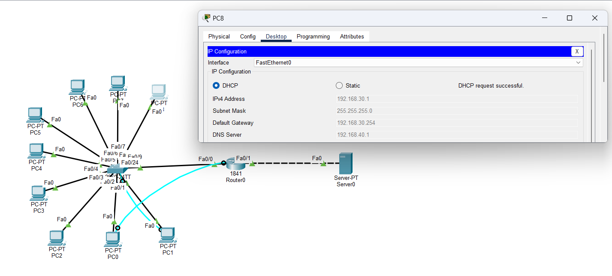
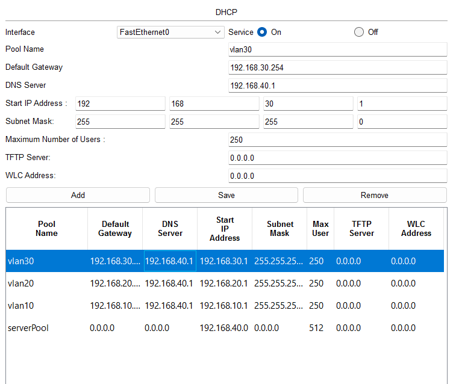
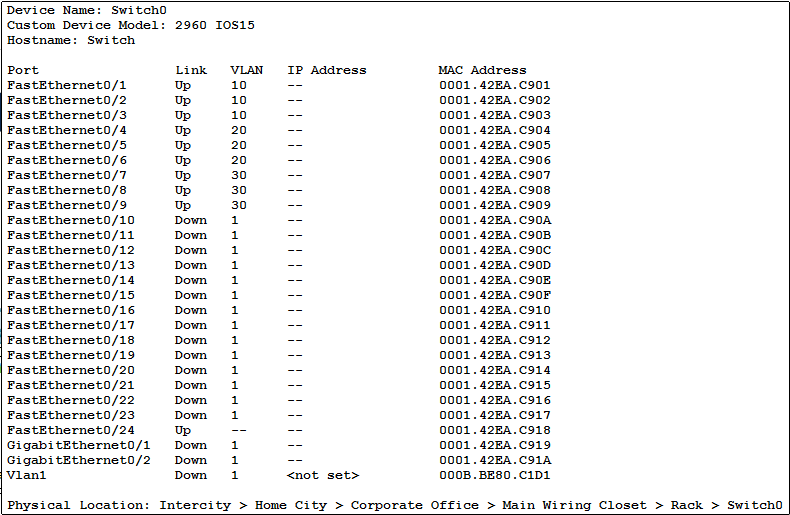

TP de BTS
Lab réseau sous Packet Tracer
Segmentation d'un réseau en 3 VLAN, routage inter-VLAN en « router-on-a-stick » et relais DHCP vers un serveur DHCP / DNS / Web.
Bonjour, je suis
Étudiant en BTS SIO, option SISR visée — réseaux et systèmes.
Recherche de stage du 18 mai au 25 juin 2027 (6 semaines)
kevinguyomar.pro@gmail.com Groix (56)
Je suis étudiant en BTS SIO (Services Informatiques aux Organisations) au lycée Notre-Dame-de-la-Paix à Ploemeur, avec l'option SISR en ligne de mire : réseaux, systèmes et infrastructure.
Avant ça, j'ai obtenu un Bac Pro MELEC puis travaillé plus d'un an sur les chantiers comme ouvrier du second œuvre. J'y ai appris la rigueur, le travail en équipe et le respect des délais et des consignes de sécurité.
En dehors des cours, je monte des PC et j'héberge des serveurs de jeu, ce qui m'a donné le goût de l'administration système.
Autonomie · Organisation · Travail en équipe · Apprentissage rapide
Français : langue maternelle
Anglais : B2
Groix (56) · Permis B
TP de BTS
Segmentation d'un réseau en 3 VLAN, routage inter-VLAN en « router-on-a-stick » et relais DHCP vers un serveur DHCP / DNS / Web.
Développement
Application de bureau pour gérer des produits et des repas, avec liaison de données et sauvegarde en JSON.
Projet perso
Site en HTML, CSS et JavaScript sans framework, avec un fond étoilé animé, publié avec GitHub Pages.
TP de BTS SIO · Cisco Packet Tracer
Objectif : découper le réseau d'une petite structure en 3 VLAN séparés, les faire communiquer grâce à un seul routeur, et leur attribuer automatiquement une adresse IP depuis un serveur central placé sur un autre réseau.

| Réseau | Ports du switch | Adresse réseau | Passerelle | Adresses distribuées |
|---|---|---|---|---|
| VLAN 10 | Fa0/1 – Fa0/3 | 192.168.10.0/24 | 192.168.10.254 | .1 à .250 (DHCP) |
| VLAN 20 | Fa0/4 – Fa0/6 | 192.168.20.0/24 | 192.168.20.254 | .1 à .250 (DHCP) |
| VLAN 30 | Fa0/7 – Fa0/9 | 192.168.30.0/24 | 192.168.30.254 | .1 à .250 (DHCP) |
| Serveurs | — (routeur Fa0/1) | 192.168.40.0/24 | 192.168.40.254 | Serveur en fixe : 192.168.40.1 |
Le port Fa0/24 du switch est en trunk 802.1Q vers le routeur : un seul câble transporte les trois VLAN.
ip helper-address 192.168.40.1 lui fait relayer la demande jusqu'au serveur, en indiquant de quel VLAN elle vient. Le serveur choisit alors le bon pool d'adresses.interface FastEthernet0/0
no ip address
!
interface FastEthernet0/0.10
encapsulation dot1Q 10
ip address 192.168.10.254 255.255.255.0
ip helper-address 192.168.40.1
!
interface FastEthernet0/0.20
encapsulation dot1Q 20
ip address 192.168.20.254 255.255.255.0
ip helper-address 192.168.40.1
!
interface FastEthernet0/0.30
encapsulation dot1Q 30
ip address 192.168.30.254 255.255.255.0
ip helper-address 192.168.40.1
!
interface FastEthernet0/1
ip address 192.168.40.254 255.255.255.0

enable secret, mot de passe console, et SSH à la place de Telnet.